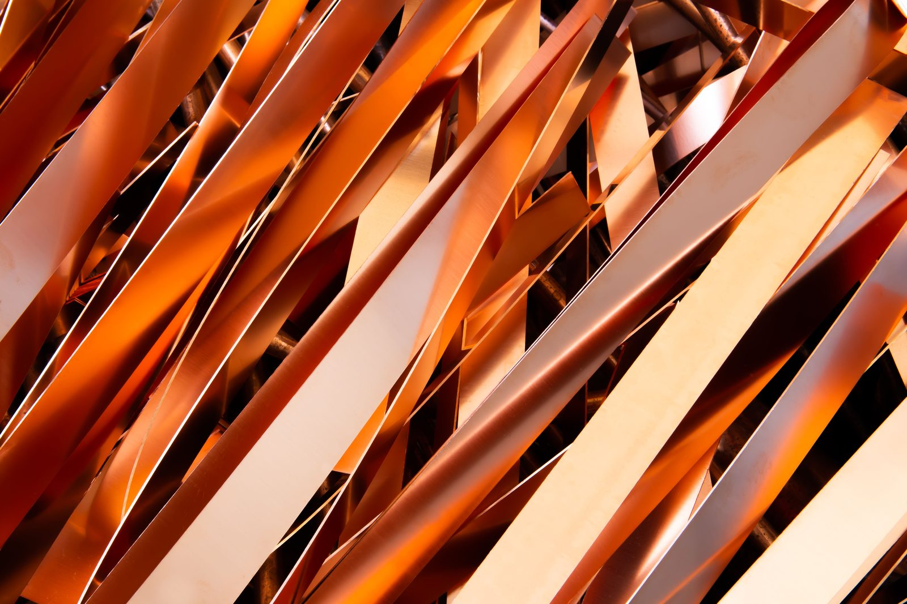
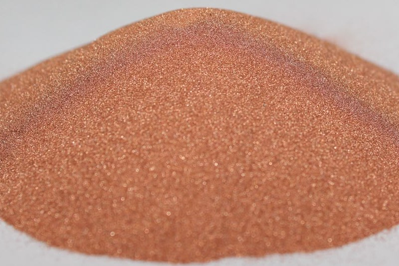

Additive manufacturing
FCP-AM absorbs about twice as much 1070 nm laser light as gas-atomised powder, for LPBF and DED on standard infrared machines.
FlexCycle Solutions turns thin-walled copper residues from battery cell production into high-performance powder. Our patented process is purely mechanical — no melting, no inert gas — and sorts the powder into six grades by particle size.
The process
Conventional copper powder is made by melting primary or secondary copper and then atomising it with gas or water — an energy-intensive route. FlexCycle takes thin-walled metallic residues already close to the right form factor and refines them mechanically into powder.


Energy demand
Nothing is melted and no inert gas is needed, so the mechanical route uses a fraction of the energy of established powder production.
Lighter segments show a range. The gas-atomisation range continues far beyond the chart. Sources: Ehmsen et al., J. Manuf. Syst. 82 (2025); Cebula et al., Sustain. Mater. Technol. 33 (2022).
FCP-AM absorbs about twice as much 1070 nm laser light as gas-atomised powder, for LPBF and DED on standard infrared machines.
Rough particles interlock for high green strength, from plain bearings to structural parts.
Copper coatings, for example on aluminium busbars for e-mobility. A rough particle surface can improve adhesion.
Fine fractions as a starting material for copper-based sinter pastes, in development with users.
First parts built from our powder.